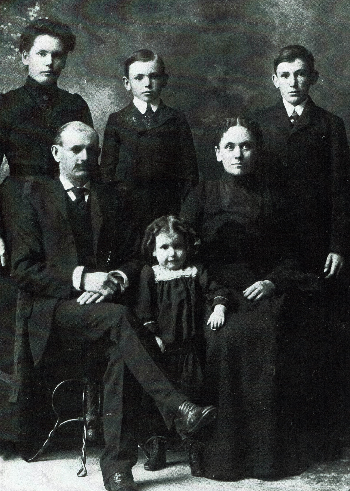

[Under Construction]
CAMPBELLs, LUGGs, & BLACKWELLs of Nelson, PA
Table of Contents For:
A SCRIBBLED STORY OF MY LIFE
by
Edited and adapted for web publishing, by William B. Thompson
 Hughey Family. L - R: Carrie, Herb,
Harry, Mary,
Hannah & Edd
- Section 1 - Adapter's
Notes.
- Section 2 - Early Memories.
- Section 3 -
Elementary School
Days.
- Section 4 -
High School Days.
- Section 5 -
Public School Teacher
Days.
- Section 6 -
Missionary Days.
- Section 7 -
Retirement Days.
- Section 8 -
Post Script Additions.